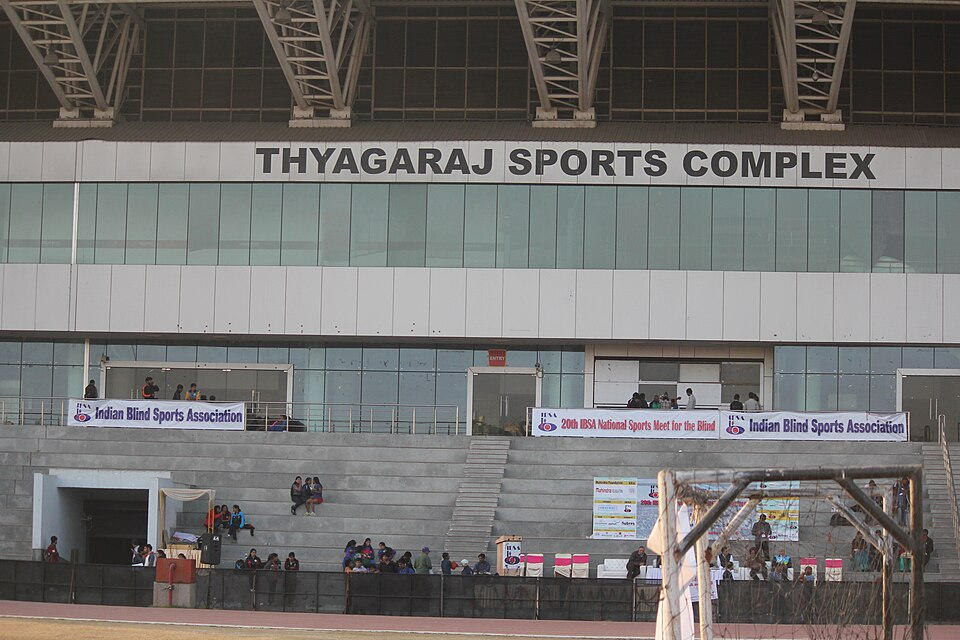

कुलगाम में लश्कर कमांडर मोहम्मद लतीफ भट ढेर, चिनाब घाटी में आतंकवाद को बड़ा झटका
दक्षिण कश्मीर के कुलगाम में सुरक्षाबलों ने 15 लाख रुपये के इनामी लश्कर-ए-ताइबा कमांडर मोहम्मद लतीफ भट को मार गिराया है। अधिकारियों के अनुसार इससे चिनाब घाटी और पीर पंजाल क्षेत्र में आतंकवाद को बड़ा झटका लगा है।
दक्षिण कश्मीर के कुलगाम जिले में सुरक्षाबलों ने एक मुठभेड़ के दौरान लश्कर-ए-ताइबा के शीर्ष कमांडर मोहम्मद लतीफ भट को ढेर कर दिया है। अधिकारियों ने बताया कि 15 लाख रुपये का इनामी लतीफ डोडा, किश्तवाड़ समेत पूरे क्षेत्र में सुरक्षा बलों के लिए बड़ी चुनौती बना हुआ था।
जांच में सामने आया है कि मोहम्मद लतीफ पढ़ाई छोड़ने के बाद कारपेंटर का काम करता था और नवंबर 2025 में घर से लापता होने के बाद आतंकी संगठन में शामिल हुआ था। सुरक्षा एजेंसियों का मानना है कि उसके खात्मे से चिनाब घाटी और पीर पंजाल क्षेत्र में सक्रिय आतंकवाद के नेटवर्क को करारा झटका लगा है।
इस क्षेत्र का पुराना इतिहास आतंकवाद और कई बड़ी वारदातों से जुड़ा रहा है। 1990 के दशक से लेकर 2000 के दशक के बीच डोडा, किश्तवाड़ और रामबन क्षेत्रों में कई बड़े नरसंहार हुए थे, जिनमें लश्कर और हिजबुल मुजाहिदीन जैसे संगठनों के नाम सामने आए थे।
और पढ़ें
 राष्ट्रीय
राष्ट्रीयमध्य प्रदेश: बीजेपी विधायक सचिन बिरला का खनन अनुमति को लेकर पत्र वायरल
मध्य प्रदेश के खरगोन जिले से भाजपा विधायक सचिन बिरला का एक पत्र सोशल मीडिया पर वायरल हो रहा है, जिसमें उन्होंने बिना उनकी अनुशंसा के खनन से जुड़ी अनुमति न देने की मांग की है।
राष्ट्रीयकश्मीर अब स्थानीय आतंकियों से पूरी तरह मुक्त: गृह मंत्री अमित शाह
लश्कर कमांडर लतीफ भट के मारे जाने के बाद केंद्रीय गृह मंत्री अमित शाह ने कहा कि कश्मीर अब स्थानीय स्तर पर भर्ती किए गए आतंकवादियों से मुक्त हो गया है।
 राष्ट्रीय
राष्ट्रीयहिमाचल प्रदेश विधानसभा में मंत्री के बयान पर हंगामा, राफेल और ऑपरेशन सिंदूर पर विवाद
हिमाचल प्रदेश विधानसभा में मंत्री जगत सिंह नेगी के राफेल विमान और ऑपरेशन सिंदूर से जुड़े बयानों पर भारी हंगामा हुआ। विपक्षी दल भाजपा ने इसे पाकिस्तान की भाषा करार दिया, जिसके बाद सदन की कार्यवाही कुछ देर के लिए स्थगित करनी पड़ी।

राष्ट्रीयसोनिया गांधी ने ग्रासा माशेल को दिया इंदिरा गांधी शांति पुरस्कार
कांग्रेस संसदीय दल की अध्यक्ष सोनिया गांधी ने दिल्ली में आयोजित समारोह में मोजाम्बिक की मानवाधिकार कार्यकर्ता ग्रासा माशेल को इंदिरा गांधी शांति पुरस्कार प्रदान किया।